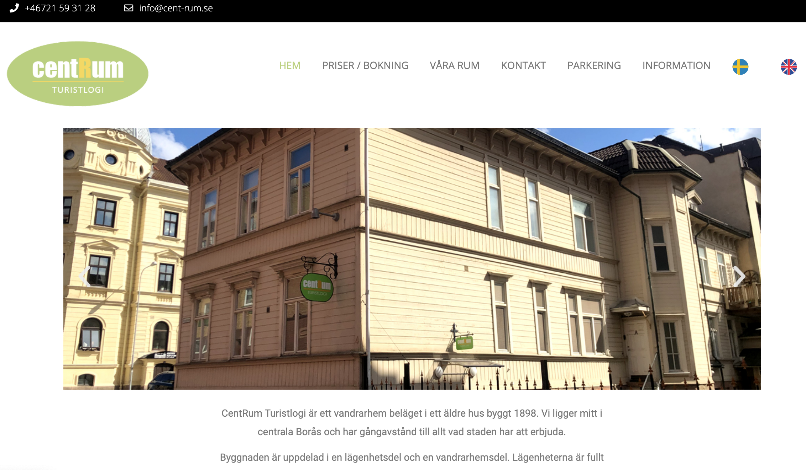

Erfarenheter
Utbildning
Front End Developer, Medieinstitutet 2020-nu YH-utbildning inom Front End Development.
Webbredaktör, Högskolan i Borås 2017-2020 Kandidatexamen inom informations arkitektur med inriktning Front End-utveckling.
Media - inriktning journalistik och event, Ljud- och Bildskolan Borås 2009-2012 Gymnasial utbildning inom media.
Ljud- och radiokurs, Ölands Folkhögskola sommaren 2018 Sommarkurs.
Arbetslivserfarenhet
Erikshjälpen E-handelsassistent
Arken Zoo Butiksmedarbetare Nuvarande extrajobb. Jobbat i butik med butiks- och kassaansvar. Vägledande kundkontakter i försäljningssyfte.
Clas Ohlson September 2018-maj 2019 Jobbat extra på Clas Ohlson under delar av studietiden. Jobbat i kassan, kundkontakt genom att vägleda kunden till val av produkt, uppackning, skyltning, mm.
Butik Sol och Vindar Öland Juni 2018-augusti 2018 Sommarjobb där jag varit butiksansvarig för det outlet-tält butiken har haft under sommaren. Övergripande ansvar för kassa, personal och varor.
Transcom kundservice December 2012-augusti 2017 Mitt senaste heltidsjobb där jag slutat för att börja studera. När jag började 2012 jobbade jag som kundserviceagent och svarade kunder som behövde hjälp via kundservice-chatt. Sen sommaren 2015 har jag jobbat som produktansvarig och hjälper kundserviceagenter med svar på svårare frågor när de själva inte kan hitta svaret i våra system. I denna arbetsuppgift ingår även många administrativa uppgifter som innebär jobb i ett flertal olika system. Det ingår även att ta över samtal med kunder som vill tala med ansvarig eller är för svåra att hantera för kundserviceagenten.
Om mig
Jag är 27 år och bor i Borås. I juni 2020 tog jag examen från Högskolan i Borås där jag läste till Webbredaktör. Under utbildningen har jag lärt webbutveckling, UX-design, sökmotoroptimering, textproduktion och mycket mer. Efter min examen bestämde jag mig för att vidareutbilda mig för att lära mig mer om webbutveckling. Jag började därför under hösten 2020 läsa på Medieinstitutet där jag nu läser till Front End Developer. Utöver studier jobbar jag varannan helg i djuraffären Arken Zoo i Borås och även som e-handelsassistent för Secondhand.se som är Erikshjälpens e-handel. Jag jobbar även som volontär för Tjejjouren Magnolia, där chattar jag med personer som behöver stöd. Jag har även hjälpt Magnolia med att ta fram grafiskt material som flyers och annonser. På fritiden umgås jag med vänner, lyssnar på musik - så väl live som inspelad och reser.
Projekt
Hemsida för CentRum Turistlogi
Våren 2019 gjorde jag tillsammans med en klasskamrat ett projektarbete i form av en hemsida. Hemsidan är för vandrarhemmet Cent-Rum som ligger i centrala Borås. I nära kontakt med uppdragsgivaren som valt att behålla den grafiska profilen från tidigare då det var en inarbetad profil. Hemsidan förnyades till dagens standarder och gjordes responsiv. Under arbetet fick vi använda alla de verktyg vi fått under våra två första år på utbildningen i form av HTML, CSS, Javascript, grafisk design, juridik med mera. Hemsidan är byggd med hjälp av Wordpress där vi även gjort ändringar i koden samt använt oss av plug-in-verktyget Elementor.
Examensarbete
Under våren 2020 skrev jag tillsammans med min klasskamrat vårt examensabete om Netflix navigationssystem. Vi valde att fokusera på användarupplevelsen och studien gjordes genom AttrakDiff och användartest.
Här kan du läsa mitt examensarbete.
Kontakt
För att komma i kontakt med mig får du mer än gärna skicka iväg ett mail till mig. Skicka mail!
Vill du se mer av mitt arbete kan du kika in på min Github.